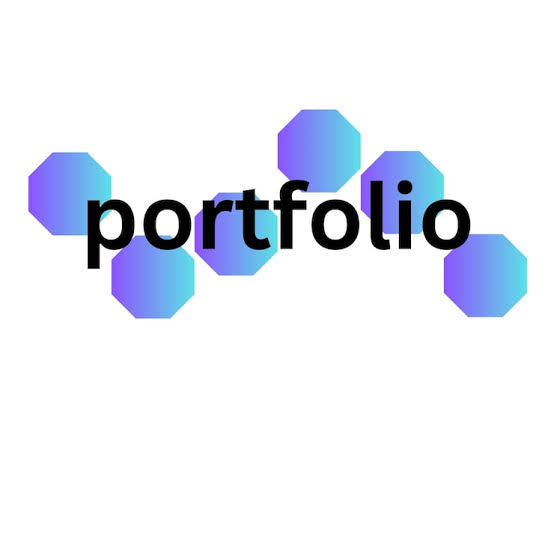
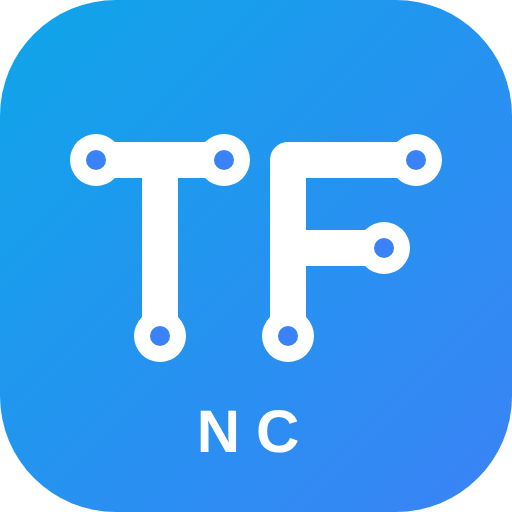
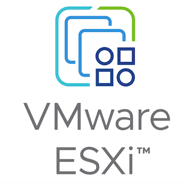

Création de ce portfolio personnel en HTML/CSS/JS pour présenter mes compétences BTS SIO.
Dans le cadre du BTS SIO, j'avais besoin d'un support pour présenter mon parcours, mes certifications, mes projets et ma veille technologique, accessible en ligne à tout moment.
Code versionné avec Git, hébergé sur GitHub et publié gratuitement avec GitHub Pages.

Mise en situation professionnelle autour de l'entreprise TechForm NC (épreuve E6 du BTS SIO, option SISR). Au sein d'une équipe de 3, notre mission est d'auditer et de cartographier le système d'information.
Dans le même scénario, TP de segmentation et de filtrage réseau : VLAN par section (Admin, SISR, SLAM, Labo) et listes de contrôle d'accès (ACL) sur du matériel Cisco, MikroTik et TP-Link.

Objectif : mettre en place un serveur de démarrage réseau (PXE) permettant de déployer des images système (Linux, Windows) sur plusieurs machines simultanément, sans support physique (USB/DVD), dans un environnement virtualisé ESXi.
Projet réalisé chez Axians : déployer des postes sans clé USB ni DVD, directement depuis le réseau, depuis un serveur de démarrage PXE.